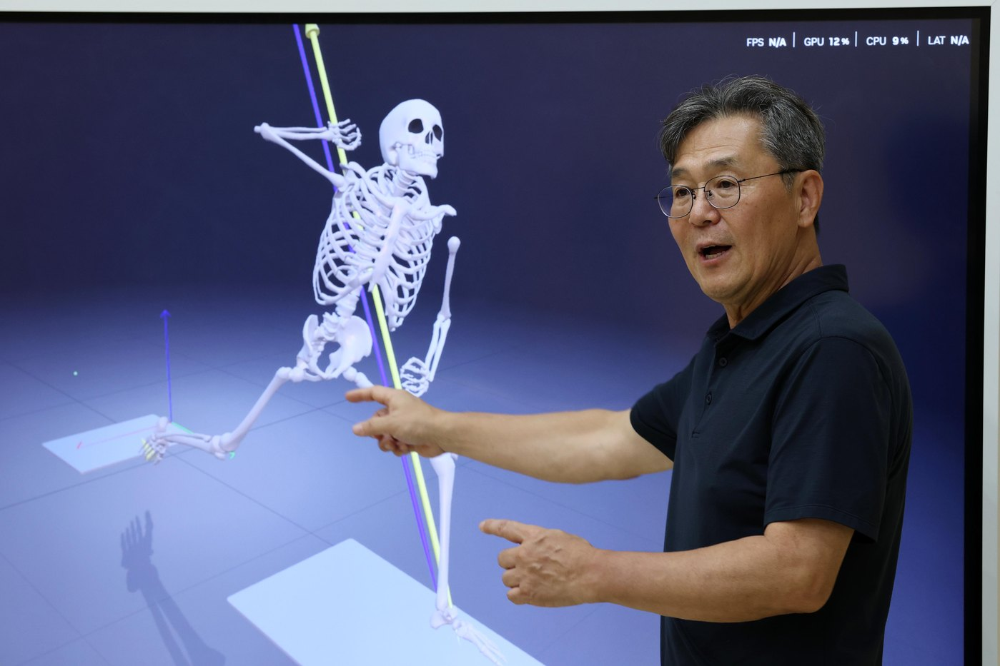

프로·독립리그
내 동작의 기준 만들기
- 정규 거리 투구와 3D 동작 측정
- 소속팀과 공유할 수 있는 개인 리포트
BIOMOTION BASEBALL · 하남 감일센터
투구 동작과 양발 지면반력
설계 조감도 시설 3D 장면은 실제 촬영이 아닙니다.
02 / 3D PITCHING & BATTING SOLUTION
3D 동작 · 양발 지면반력 · 공과 배트의 움직임
같은 시점에 놓고 동작과 결과를 비교
03 / SCIENCE & COACHING
바이오메카닉스 분석과 마운드 경험의 연결

PITCHING COACH
04 / PROGRAMS & PACKAGES
05 / GAMIL CENTER
높은 층고 · 정규 18.44m 투구 거리
투수판에서 뒤쪽 안전망까지 20.60m (설계 기준)
정규 거리 마운드 · 양발 지면반력 측정
지면반력 타석 · 배트와 타구 트래킹
체력 측정과 동작 리포트 설명
경기도 하남시 감일동 376-168 지상 2층
방문 전 일정 문의
RESERVATION & FAQ · BIOMOTION BASEBALL
메일에 적을 내용
메일 앱에서 내용을 확인하고 직접 보내는 방식